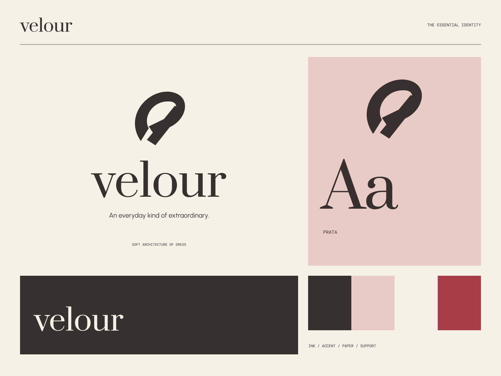

01
Feel the difference
Form, texture, and the little details closest to you.
SLOWLY MADE / OFTEN WORN
An everyday kind of extraordinary. A considered everyday silhouette.
A coherent little world
A considered everyday silhouette. An everyday kind of extraordinary.
01
Form, texture, and the little details closest to you.
02
Pieces made with care and room to become familiar.
03
A quiet foundation for a very personal point of view.

The point of view
Sculptural folded ribbons, couture-like labels, blush tissue, and quietly dramatic serif setting. Sensory material meets precise contemporary composition.